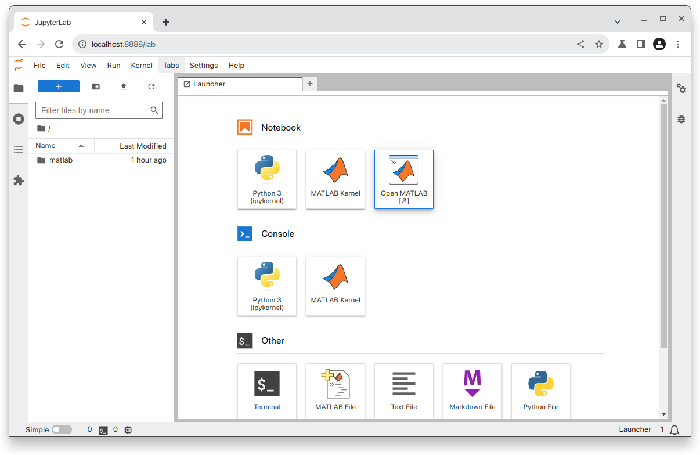
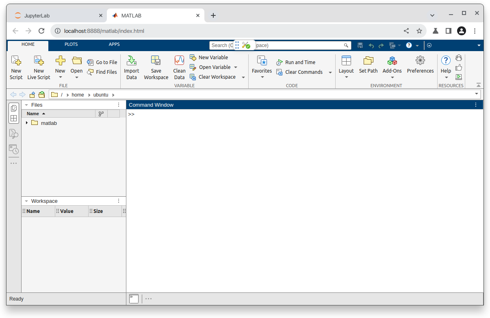

Matlab
In the following we will be guiding you throught the process of installing Matlab on a Strato Instance.
Tip
Matlab is also available on DeiC Interactive HPC (also known as UCloud). This requires no setup and ships with a GUI out of the box. Read more about this possibility in the official platform documentation.
Installing Matlab
Begin by updating the APT packaging index, so we have an updated list of sources to download applications from:
sudo apt update
Before going further, we will need to install an unzip tool and some additional libraries recommended by Mathworks.
sudo apt install unzip libx11-dev xorg-dev xvfb
Download the Matlab Package Manager (MPM) from Mathworks and make it executable:
sudo wget -P /usr/local/bin/ https://www.mathworks.com/mpm/glnxa64/mpm && sudo chmod +x /usr/local/bin/mpm
Now install Matlab using MPM. Note that here we are installing a version from late 2023. You can check Mathworks website to see if there is a newer release.
mpm install MATLAB --release=R2024a --destination=$HOME/matlab/
Additional matlab toolboxes can be installed in the following manner:
mpm install --release=R2024a --destination=$HOME/matlab --products Signal_Processing_Toolbox Communications_Toolbox
As we want to be able to launch matlab, when we type matlab - we will need to add the directory of the matlab executable to our PATH variable. We do this and restart our shell:
echo "export PATH=$HOME/matlab/bin:$PATH" >> .bashrc && exec $SHELL
Activating Matlab
Matlab needs an active licence to run. Before starting the activation process, open your local browser and visit MathWorks to acquire a one-time password.
bash $HOME/matlab/bin/activate_matlab.sh
Running Matlab
There are two ways in which you can work with Matlab on Strato instances.
-
Run the application in headless mode: By default Strato instances do not come with any graphical user interfaces, but are operated in headless mode. In cases where you simply need to execute a prewritten script, this approach might be preferable.
-
Run with graphical user interface (GUI): Here the application runs on your Strato instance, but its graphics are rendered on your local computer - in this case your web browser. This is useful for interactive development, ie. workflows where you will need to test and modify your code continuously.
Headless mode
If you wanted to run prepared script called your_script.m, you would run:
matlab -nodisplay -batch your_script.m
If you would want to enter the Matlab console to execute individual statements:
matlab -nodisplay
With a GUI
Here we will be running the application on the Strato instance and rendering the application on our local computer. In order for your local computer to receive the necessary datastream from the server, we will need to add a small detail to our SSH command.
ssh -i ~/.ssh/my_ssh_key -L 8888:localhost:8888 <user>@<instance_ip>
This establishes port-forwarding from your instance to the localhost of your computer. If you did not do this when you logged in to your instance, simply log out and log back in with these details added.
Now let's proceed with the install. Start by checking if PIP is found on the system:
which pip
If the command ouputs a path, PIP is installed. If command outputs pip not found, go ahead and install it by running:
sudo apt install python3-pip python3-dev
Now install the Jupyter Kernel with:
pip install jupyter jupyter-matlab-proxy
Jupyter has now been installed in $HOME/.local/bin - a subdirectory to your user directory. Adding this directory to the system variable $PATH will allow us to launch Jupyter from anywhere:
export PATH="$PATH:$HOME/.local/bin/"
Now launch Jupyter with:
jupyter lab --port=8888
This will output a great many lines. Towards the end of the output, you will find a line that looks something like this:
http://localhost:8888/tree?token=b9fc44a5ic1dbl685da73a2acad22uu5ac299f3d46icae8445bfa262382c
This URL has the port number we specified earlier and a special security token. Copy this link and paste it into your web browser.
You can now choose to either run Matlab as an application inside your browser or as a Jupyter Notebook.

If you chose "Open Matlab" you will be met with a registration window. In order to do this, input your AAU email adress and follow the process of verifying with WAYF.
After this step, you should be inside the application and everything should feel familiar.
